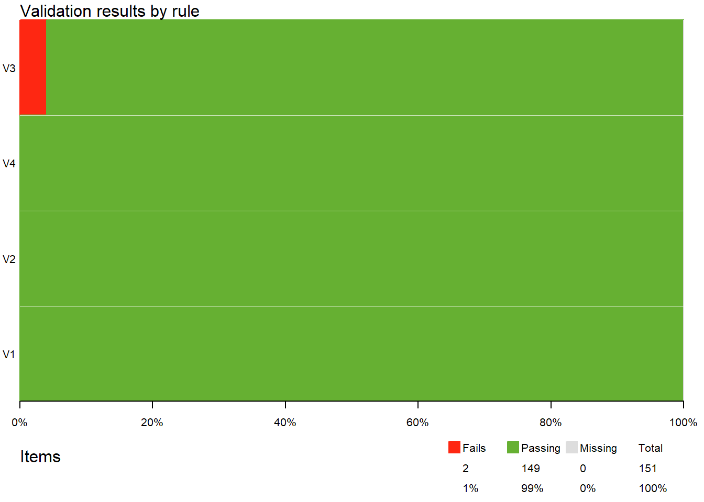

Limpieza y Normalización de Datos
Análisis de Datos 1
2026-03-05
👋Encerar y pulir
En esta clase abordaremos los conceptos fundamentales de limpieza y normalización de datos. Para trabajar con datos de manera efectiva, es crucial garantizar su calidad. Según Schmidt et al. (2021), podemos evaluar la calidad de los datos a partir de los siguientes criterios:
Integridad: ¿En qué grado los datos cumplen requisitos a nivel técnico y de su estructura?
Completitud: ¿En qué grado los valores esperados están presentes?
Consistencia: ¿En qué grado los valores de los datos están libres de rupturas de convenciones o contradicciones?
Exactitud: ¿Cuál es el grado de acuerdo entre distribuciones y asociaciones observadas y esperadas?

1. Limpieza de nombres de variables
Uno de los primeros pasos en la limpieza de datos es asegurarnos de que los nombres de las variables sean claros, consistentes y fáciles de manejar. Para esto, utilizaremos el paquete janitor y su función clean_names(), que convierte los nombres de las columnas a formato snake_case.
2. Detección de valores faltantes
Es importante identificar si hay datos faltantes en nuestro conjunto de datos. Podemos hacerlo con is.na() y algunas funciones de dplyr.
codigo_id nombre_completo ingreso_mensual
0 0 1 3. Identificación de valores únicos y duplicados
Podemos analizar los valores únicos y detectar duplicados con distinct() y duplicated().
4. Validaciones estructuradas con validate
El paquete validate nos permite definir reglas de validación y aplicarlas sistemáticamente sobre nuestros datos. validate permite verificar múltiples reglas al mismo tiempo y generar informes detallados sobre el cumplimiento de los datos.
¿Como funciona validate?
Con validate, podemos definir un conjunto de reglas y aplicarlas sobre un dataset, obteniendo un resumen de qué reglas se cumplen o fallan.
La sintaxis general siempre va a ir teniendo una estructura como esta
reglas <- validator(tatuaje_en_cuello == "Sí" ,el_pelo_negro == "Sí "``)
resultado <- confront(dataset, reglas)
Note
Podes leer más sobre validate y los tipos de validación que te permite hacer en el libro en inglés por ahora) “The Data Validation Cookbook”
Un ejemplo sencillo
las primeras tres reglas son comprobaciones de registros: cada registro arrojará una respuesta. En la última regla, comprobamos si la velocidad y la distancia están correlacionadas positivamente; esto arrojará una única respuesta TRUEo FALSEpara todo el conjunto de datos.
El dataframe de resultado con una línea de información para cada regla V1, V2, V3y V4. Para ser precisos:
¿Cuántos elementos de datos se comprobaron con cada regla?
¿Cuántos elementos se aprobaron, fallaron o dieron como resultado
NA?Si la verificación resultó en un error (no se pudo realizar) o dio una advertencia.
La expresión que realmente se evaluó para realizar la verificación.
Interpretando los resultados
La misma información se puede resumir gráficamente de la siguiente manera, donde cada barra horizontal indica el porcentaje de casos de Reprobado, Aprobado y Omitido.
Siguiendo los criterios de Integridad, Completitud, Consistencia y Exatitud que mencionámos veamos algunos ejemplos de cómo podemos usar validate para revisar nuestra base
📌 Cargar el dataset Palmer Penguins
Usaremos la base de datos penguins_raw del paquete palmerpenguins, que contiene errores comunes como valores faltantes, nombres inconsistentes y datos mal ingresados.
¿Qué cosas ya le ves de entrada que estan mal?
#install.packages("palmerpenguins")
library(palmerpenguins)
# Cargamos la base de datos cruda de pingüinos
df <- palmerpenguins::penguins_raw
# Revisamos los primeros registros
head(df)| studyName | Sample Number | Species | Region | Island | Stage | Individual ID | Clutch Completion | Date Egg | Culmen Length (mm) | Culmen Depth (mm) | Flipper Length (mm) | Body Mass (g) | Sex | Delta 15 N (o/oo) | Delta 13 C (o/oo) | Comments |
|---|---|---|---|---|---|---|---|---|---|---|---|---|---|---|---|---|
| PAL0708 | 1 | Adelie Penguin (Pygoscelis adeliae) | Anvers | Torgersen | Adult, 1 Egg Stage | N1A1 | Yes | 2007-11-11 | 39.1 | 18.7 | 181 | 3750 | MALE | NA | NA | Not enough blood for isotopes. |
| PAL0708 | 2 | Adelie Penguin (Pygoscelis adeliae) | Anvers | Torgersen | Adult, 1 Egg Stage | N1A2 | Yes | 2007-11-11 | 39.5 | 17.4 | 186 | 3800 | FEMALE | 8.94956 | -24.69454 | NA |
| PAL0708 | 3 | Adelie Penguin (Pygoscelis adeliae) | Anvers | Torgersen | Adult, 1 Egg Stage | N2A1 | Yes | 2007-11-16 | 40.3 | 18.0 | 195 | 3250 | FEMALE | 8.36821 | -25.33302 | NA |
| PAL0708 | 4 | Adelie Penguin (Pygoscelis adeliae) | Anvers | Torgersen | Adult, 1 Egg Stage | N2A2 | Yes | 2007-11-16 | NA | NA | NA | NA | NA | NA | NA | Adult not sampled. |
| PAL0708 | 5 | Adelie Penguin (Pygoscelis adeliae) | Anvers | Torgersen | Adult, 1 Egg Stage | N3A1 | Yes | 2007-11-16 | 36.7 | 19.3 | 193 | 3450 | FEMALE | 8.76651 | -25.32426 | NA |
| PAL0708 | 6 | Adelie Penguin (Pygoscelis adeliae) | Anvers | Torgersen | Adult, 1 Egg Stage | N3A2 | Yes | 2007-11-16 | 39.3 | 20.6 | 190 | 3650 | MALE | 8.66496 | -25.29805 | NA |
Validación de Completitud
Vamos a empezar por la completitud. ¿Qué tan “completo” está penguins_raw?
# Generamos reglas
reglas_completitud_raw <- validator(sin_faltantes_raw = is_complete(df)) # Regla general de completitud para TODO el dataset
# Confrontamos df con las reglas
resultado_completitud_raw <- confront(df, reglas_completitud_raw)
summary(resultado_completitud_raw) # Imprimir resultados| name | items | passes | fails | nNA | error | warning | expression |
|---|---|---|---|---|---|---|---|
| sin_faltantes_raw | 344 | 34 | 310 | 0 | FALSE | FALSE | is_complete(df) |
Ese summary lo leemos así: - name: El nombre de la regla.
items: El dataset tiene 344 elementos que se están evaluando.
passes: De esos 344 elementos, 310 cumplen con la regla, es decir, no tienen valores faltantes.
fails: ego 34 no la pasaron.
nNA: es el número de valores faltantes (NA) identificados en el dataset. ojo porque por ahí todavia no creamos la regla adecuada para detectarlos.
error: FALSE: Quiere decuir que no hubo errores en la evaluación de la regla.
warning: FALSE: No hay advertencias durante la evaluación.
expression: is_complete(df): La expresión que se utilizó para la validación, que en este caso verifica la completitud del dataset sin faltantes.
Validación de Integridad
Vamos a verificar si hay filas duplicadas.
# Reglas de integridad para penguins_raw (df)
reglas_integridad_raw <- validator(
sin_faltantes_raw = is_complete(df), # (General - no relevante aquí)
sin_duplicados_raw = is_unique(df) # Regla de integridad: registros únicos
)
# Confrontamos penguins_raw (df) con las reglas de integridad
resultado_integridad_raw <- confront(df, reglas_integridad_raw)
summary(resultado_integridad_raw) # Imprimir resultados| name | items | passes | fails | nNA | error | warning | expression |
|---|---|---|---|---|---|---|---|
| sin_faltantes_raw | 344 | 34 | 310 | 0 | FALSE | FALSE | is_complete(df) |
| sin_duplicados_raw | 344 | 344 | 0 | 0 | FALSE | FALSE | is_unique(df) |
Validación de Exactitud
reglas_exactitud_raw <- validator(
sin_faltantes_dataset_raw = is_complete(df), # (General)
sin_duplicados_raw = is_unique(df), # (Integridad)
# Reglas de completitud:
culmen_length_mm_no_na_raw = !is.na(`Culmen Length (mm)`), #
culmen_depth_mm_no_na_raw = !is.na(`Culmen Depth (mm)`),
flipper_length_mm_no_na_raw = !is.na(`Flipper Length (mm)`),
body_mass_g_no_na_raw = !is.na(`Body Mass (g)`),
sex_no_na_raw = !is.na(Sex), # Completitud para 'Sex'
# Reglas de Categorías Válidas (Consistencia de Categorías):
categorias_especie_raw = Species %in% c("Adelie Penguin (Pygoscelis adeliae)", "Chinstrap penguin (Pygoscelis antarctica)", "Gentoo penguin (Pygoscelis papua)"), # Categorías válidas para 'Species'
categorias_isla_raw = Island %in% c("Biscoe", "Dream", "Torgersen"), # Categorías válidas para 'Island'
categorias_sexo_raw = Sex %in% c("MALE", "FEMALE", ".") # Categorías válidas para 'Sex' (¡incluimos "."!)
)
# Confrontar penguins_raw (df) con las reglas de exactitud
resultado_exactitud_raw <- confront(df, reglas_exactitud_raw)
summary(resultado_exactitud_raw) # Imprimir resultado| name | items | passes | fails | nNA | error | warning | expression |
|---|---|---|---|---|---|---|---|
| sin_faltantes_dataset_raw | 344 | 34 | 310 | 0 | FALSE | FALSE | is_complete(df) |
| sin_duplicados_raw | 344 | 344 | 0 | 0 | FALSE | FALSE | is_unique(df) |
| culmen_length_mm_no_na_raw | 344 | 342 | 2 | 0 | FALSE | FALSE | !is.na(Culmen Length (mm)) |
| culmen_depth_mm_no_na_raw | 344 | 342 | 2 | 0 | FALSE | FALSE | !is.na(Culmen Depth (mm)) |
| flipper_length_mm_no_na_raw | 344 | 342 | 2 | 0 | FALSE | FALSE | !is.na(Flipper Length (mm)) |
| body_mass_g_no_na_raw | 344 | 342 | 2 | 0 | FALSE | FALSE | !is.na(Body Mass (g)) |
| sex_no_na_raw | 344 | 333 | 11 | 0 | FALSE | FALSE | !is.na(Sex) |
| categorias_especie_raw | 344 | 344 | 0 | 0 | FALSE | FALSE | Species %vin% c(“Adelie Penguin (Pygoscelis adeliae)”, “Chinstrap penguin (Pygoscelis antarctica)”, “Gentoo penguin (Pygoscelis papua)”) |
| categorias_isla_raw | 344 | 344 | 0 | 0 | FALSE | FALSE | Island %vin% c(“Biscoe”, “Dream”, “Torgersen”) |
| categorias_sexo_raw | 344 | 333 | 0 | 11 | FALSE | FALSE | Sex %vin% c(“MALE”, “FEMALE”, “.”) |
Validación de Consistencia
Finalmente, vamos a verificar la consistencia de tipos de datos en penguins_raw. Ya vimos con glimpse() que muchas columnas numéricas se importaron como character. Vamos a usar validate para confirmar y cuantificar este problema de consistencia de tipo de datos.
reglas_consistencia_raw <- validator(
sin_faltantes_dataset_raw = is_complete(df), # (General - no foco)
sin_duplicados_raw = is_unique(df), # (Integridad - no foco)
culmen_length_mm_no_na_raw = !is.na(`Culmen Length (mm)`), # (Exactitud - no foco ahora)
culmen_depth_mm_no_na_raw = !is.na(`Culmen Depth (mm)`),
flipper_length_mm_no_na_raw = !is.na(`Flipper Length (mm)`),
body_mass_g_no_na_raw = !is.na(`Body Mass (g)`),
sex_no_na_raw = !is.na(Sex),
categorias_especie_raw = Species %in% c("Adelie Penguin (Pygoscelis adeliae)", "Chinstrap penguin (Pygoscelis antarctica)", "Gentoo penguin (Pygoscelis papua)"),
categorias_isla_raw = Island %in% c("Biscoe", "Dream", "Torgersen"),
categorias_sexo_raw = Sex %in% c("MALE", "FEMALE", "."),
# Reglas de Consistencia de TIPO DE DATOS (¡Aquí está el foco!):
culmen_length_mm_es_numerico_raw = is.numeric(`Culmen Length (mm)`), # ¡Consistencia de tipo para 'Culmen Length (mm)'!
culmen_depth_mm_es_numerico_raw = is.numeric(`Culmen Depth (mm)`),
flipper_length_mm_es_numerico_raw = is.numeric(`Flipper Length (mm)`),
body_mass_g_es_numerico_raw = is.numeric(`Body Mass (g)`),
sex_es_factor_raw = is.factor(Sex), # Verificar si 'Sex' es factor (¡debería ser categórica!)
species_es_factor_raw = is.factor(Species), # Verificar si 'Species' es factor
island_es_factor_raw = is.factor(Island) # Verificar si 'Island' es factor
)
salida_consistencia_raw <- confront(df, reglas_consistencia_raw)
summary(salida_consistencia_raw) # Resumen del resultado de consistencia de tipos| name | items | passes | fails | nNA | error | warning | expression |
|---|---|---|---|---|---|---|---|
| sin_faltantes_dataset_raw | 344 | 34 | 310 | 0 | FALSE | FALSE | is_complete(df) |
| sin_duplicados_raw | 344 | 344 | 0 | 0 | FALSE | FALSE | is_unique(df) |
| culmen_length_mm_no_na_raw | 344 | 342 | 2 | 0 | FALSE | FALSE | !is.na(Culmen Length (mm)) |
| culmen_depth_mm_no_na_raw | 344 | 342 | 2 | 0 | FALSE | FALSE | !is.na(Culmen Depth (mm)) |
| flipper_length_mm_no_na_raw | 344 | 342 | 2 | 0 | FALSE | FALSE | !is.na(Flipper Length (mm)) |
| body_mass_g_no_na_raw | 344 | 342 | 2 | 0 | FALSE | FALSE | !is.na(Body Mass (g)) |
| sex_no_na_raw | 344 | 333 | 11 | 0 | FALSE | FALSE | !is.na(Sex) |
| categorias_especie_raw | 344 | 344 | 0 | 0 | FALSE | FALSE | Species %vin% c(“Adelie Penguin (Pygoscelis adeliae)”, “Chinstrap penguin (Pygoscelis antarctica)”, “Gentoo penguin (Pygoscelis papua)”) |
| categorias_isla_raw | 344 | 344 | 0 | 0 | FALSE | FALSE | Island %vin% c(“Biscoe”, “Dream”, “Torgersen”) |
| categorias_sexo_raw | 344 | 333 | 0 | 11 | FALSE | FALSE | Sex %vin% c(“MALE”, “FEMALE”, “.”) |
| culmen_length_mm_es_numerico_raw | 1 | 1 | 0 | 0 | FALSE | FALSE | is.numeric(Culmen Length (mm)) |
| culmen_depth_mm_es_numerico_raw | 1 | 1 | 0 | 0 | FALSE | FALSE | is.numeric(Culmen Depth (mm)) |
| flipper_length_mm_es_numerico_raw | 1 | 1 | 0 | 0 | FALSE | FALSE | is.numeric(Flipper Length (mm)) |
| body_mass_g_es_numerico_raw | 1 | 1 | 0 | 0 | FALSE | FALSE | is.numeric(Body Mass (g)) |
| sex_es_factor_raw | 1 | 0 | 1 | 0 | FALSE | FALSE | is.factor(Sex) |
| species_es_factor_raw | 1 | 0 | 1 | 0 | FALSE | FALSE | is.factor(Species) |
| island_es_factor_raw | 1 | 0 | 1 | 0 | FALSE | FALSE | is.factor(Island) |
¡Y así llegamos al fin de la unidad 3!
Hoy aprendimos a:
Preparar nuestros datos para el análisis: Empezamos limpiando los nombres de las variables con janitor::clean_names() para que sean más manejables y consistentes.
Detectar problemas comunes de calidad de datos: Exploramos cómo identificar valores faltantes, duplicados y valores únicos utilizando funciones básicas de R y dplyr.
Validar nuestros datos de forma estructurada con validate: Aprendimos a definir reglas para evaluar la completitud, integridad, exactitud y consistencia de nuestros datos. Vimos cómo usar las funciones clave de validate (validator, confront, summary, plot) para aplicar estas reglas al dataset penguins_raw.
Cuantificar y resumir los problemas de calidad de datos: Comprobamos cómo validate no solo detecta los problemas, sino que también nos proporciona información detallada y resumida sobre cuántos registros fallan en cada regla y dónde se encuentran los errores.